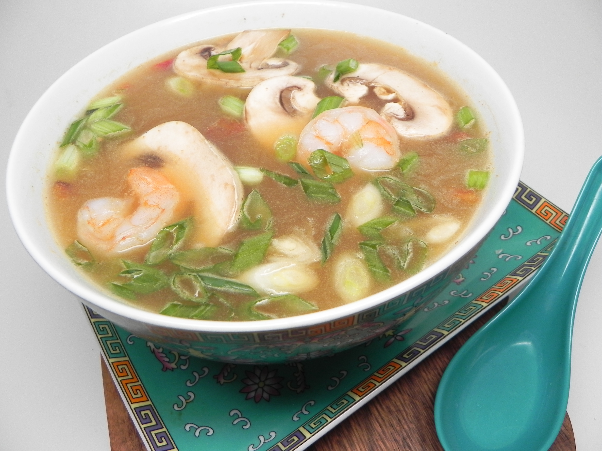

Tomyam

What is Tomyam Soup?
Tomyam is a type of hot and sour Thai soup usually cooked with shrimp (prawn).
The words "tom yam" are derived from two Thai words.Tom refers to the boiling process, while yam means 'mixed'.
Tom yum is characterised by its distinct hot and sour flavours, with fragrant spices and herbs generously used in the broth.
Ingredients
- 4 cups vegetable broth
- 1 pound raw shrimp, unpeeled and deveined
- 4 limes, juiced with pulp
- 4 Thai chile peppers, quartered (Optional)
- 2 stalks lemongrass, quartered
- 2 tablespoons tom yum paste
- 1 ½ tablespoons fish sauce
- 1 tablespoon white sugar
- 1 tablespoon chile sauce
- 4 (1/4 inch thick) slices fresh ginger root
- 6 baby bella mushrooms, sliced
- 2 green onions, thinly sliced
Instructions
- Combine vegetable broth and shrimp in a pot over medium-high heat.Bring to a low boil for 10 minutes, then lower heat and
simmer for 10 minutes. Remove shrimp from the broth and remove and discard shells; set shrimp aside.
- Add lime juice, lime pulp, chile peppers, lemon grass, tom yum paste, fish sauce,sugar, chile sauce, and ginger
slices to the broth; cook for 10 minutes. Remove chile slices to the broth; cook for 10 minutes. Remove chile
shrimp and remove from the heat.
- Ladle soup into bowls and top with mushroom slices and green onions.
Return to Homepage